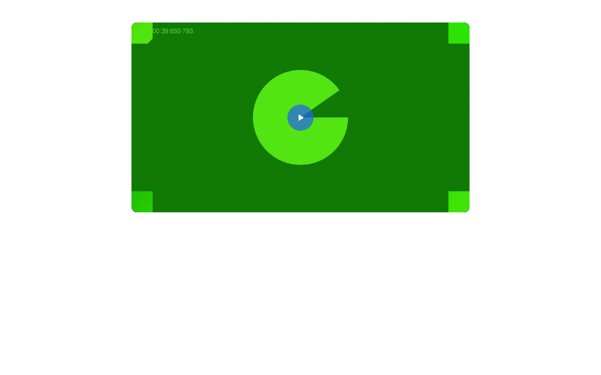
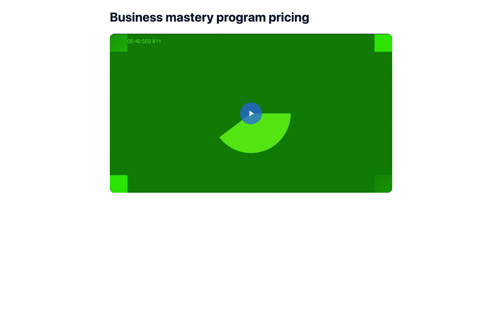
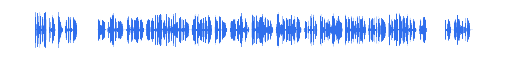
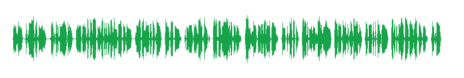
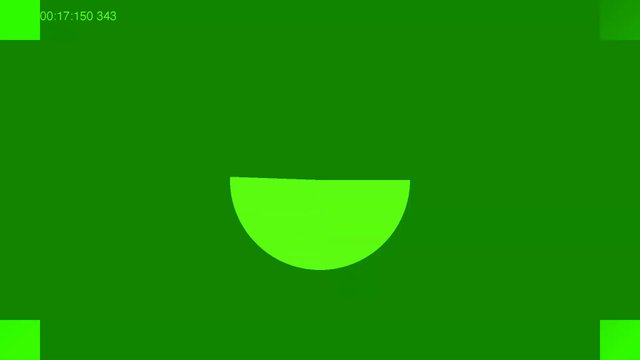
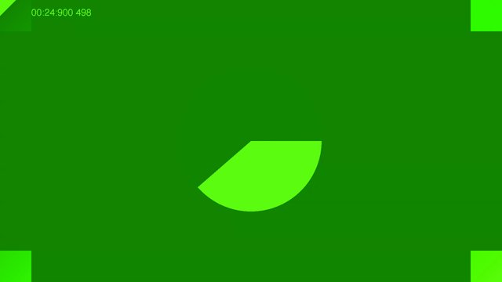
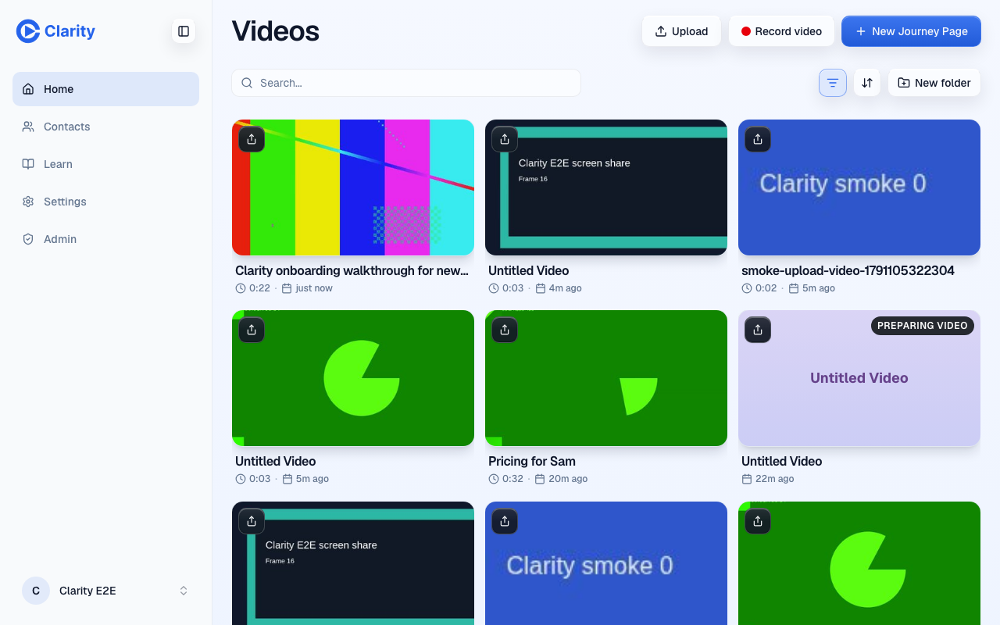
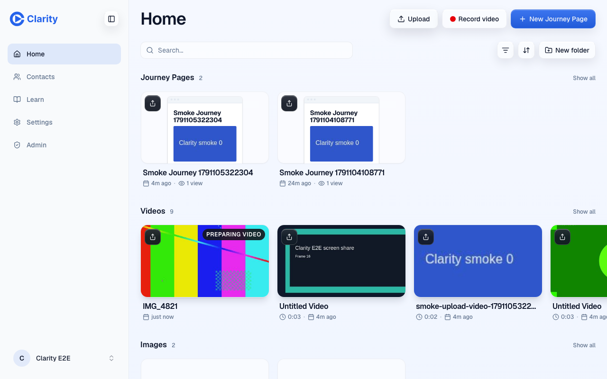

Auto-title and auto-trim, PR #1007 preview
Recorded on the PR preview (pr-1007) on 2026-10-04 with a synthetic voice and Chrome's fake camera. No customer content. Previews have no OpenAI key, so the title and the setup-talk judgment came from gpt-6.1-sol answering the production prompt through Codex, passed in through a preview-only tick. Everything after that judgment ran on the preview's real code, database and Mux.
1. The share page title
The take finished as "Untitled Video", so its share page had no headline. One sweep later the page reads the video's new title live. No page write happens, and the share link stays the same.


2. The trim
Mux's captions gave 9 cues. The first, "is this recording? Okay, yes, I think it's going.", runs from 0 to 8.0 s and swallowed 3 s of dead air. The last, "Okay, how do I stop this thing?", starts at 39.0 s. The model called both setup talk. The cut keeps 7.75 s to 39.25 s.

7.75 s 39.25 s


A first run on this preview cut at 39.75 s and kept the first syllable of "Okay, how do I stop this". The pad after the last kept cue was meant for the true end of speech. Mux puts the boundary between two cues in the pause, so a dropped closing cue now gets the same 0.25 s pad as the head. That fix is in the PR and this run used it.
3. A user edit always wins
On the first take I renamed the video to "Pricing for Sam" through the real Library rename, then forced the automatic pass to run again with the same judgment. It reported the title as the user's and left it alone. The share page showed "Pricing for Sam" within a minute, the edge cache's limit. The test suite covers the other orders: a rename or trim before, during or after the pass, and the recorder retrying its trim after losing a race.

4. Library uploads

IMG_4821.mp4, so the card reads IMG_4821.
5. Spike: how precise are Mux captions?
Read-only, on 60 recent production videos. Caption tracks came from the public playback stream. Speech timing came from ffmpeg silence detection on 38 of them. Only aggregate numbers are shown here.
| Question | Measured | Consequence |
|---|---|---|
| Timing granularity | Cue level, median 3 to 5 s and about 8 words. No word timings. | Cuts land on cue boundaries. |
| Do captions exist? | 52 of 55 videos had a track. The 3 without were short. | Takes without a track are left alone after 30 minutes. |
| Where does the first cue start? | At exactly 0.000 in 51 of 52. Cues have no gaps. | Leading silence is invisible. The head is cut only where the model calls a whole cue setup talk. |
| Where does the last cue end? | Within 1 s of the audio's end in 34 of 38. The worst was 5.5 s early, and that tail was Stop-reach noise. | The tail is cut 0.75 s after the last cue. |
| How much dead air is there? | Head: median 0.55 s, max 2.9 s. Tail: median 0.6 s, 15 of 38 over 1.2 s. | Below 1.5 s saved, no clip is made. |